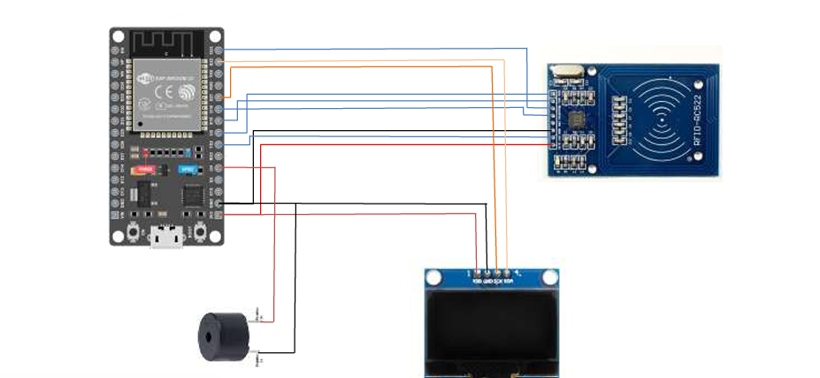

IOT / HARDWARE PROJECT
IoT-Based Smart Attendance System
A smart attendance system built with ESP32, RFID, OLED display, Wi-Fi and Google Sheets for connected attendance management.
PROJECT OVERVIEW
About the Project
This project uses an ESP32 and RFID-RC522 reader to identify registered students from their RFID cards. Student information is displayed on an OLED screen, attendance is sent to Google Sheets over Wi-Fi, and a small web page hosted by the ESP32 can show the present-student list.
Problem
Manual attendance can be time-consuming and difficult to manage accurately.
Objective
Automate attendance using RFID and provide connected, real-time information.
How It Works
The RFID card is scanned, the UID is matched with a student, the OLED shows the result, and valid attendance is sent online.
Connected Features
Wi-Fi connectivity, Google Sheets integration, OLED feedback, buzzer alerts, and an ESP32 web interface.
TECHNOLOGIES & COMPONENTS
Hardware & Software Used
CIRCUIT DIAGRAM
System Connections
The diagram below shows the ESP32 connected to the RFID-RC522 reader, OLED display and buzzer.

SYSTEM DETAILS
Pin Configuration
| Component | ESP32 Pin | Function |
|---|---|---|
| RFID-RC522 SDA / SS | GPIO 5 | Chip select |
| RFID-RC522 RST | GPIO 17 | Reset |
| RFID-RC522 MISO | SPI | SPI data |
| RFID-RC522 MOSI | SPI | SPI data |
| RFID-RC522 SCK | SPI | SPI clock |
| OLED | I2C | Display communication |
| Buzzer | GPIO 4 | Audio feedback |
The exact wiring should be checked against the physical circuit and your project report before publishing any pin values as final documentation.
SOURCE CODE
ESP32 Arduino Code
The code is displayed for visitors to read. It is not editable and is not executed in the browser.
#include <WiFi.h>
#include <HTTPClient.h>
#include <WiFiClientSecure.h>
#include <SPI.h>
#include <MFRC522.h>
#include <Wire.h>
#include <U8g2lib.h>
#include <WebServer.h>
// ---------------- PIN DEFINITIONS ----------------
#define SS_PIN 5
#define RST_PIN 17
#define BUZZER 4
// ---------------- RFID ----------------
MFRC522 rfid(SS_PIN, RST_PIN);
// ---------------- OLED ----------------
U8G2_SH1106_128X64_NONAME_F_HW_I2C u8g2(
U8G2_R0,
U8X8_PIN_NONE
);
// ---------------- WIFI ----------------
// CHANGE THESE TO YOUR WIFI DETAILS
const char* ssid = "YOUR_WIFI_NAME";
const char* password = "YOUR_WIFI_PASSWORD";
// ---------------- GOOGLE SCRIPT ----------------
// CHANGE THIS TO YOUR GOOGLE APPS SCRIPT WEB APP URL
String scriptURL = "YOUR_GOOGLE_SCRIPT_URL";
// ---------------- WEB SERVER ----------------
WebServer server(80);
String attendanceList = "";
int srNo = 1;
// ---------------- IP ADDRESS ----------------
String ipAddress = "";
// ---------------- WEB PAGE ----------------
void handleRoot() {
String html = "<!DOCTYPE html>";
html += "<html>";
html += "<head>";
html += "<title>Smart Attendance</title>";
// Refresh page every 3 seconds
html += "<meta http-equiv='refresh' content='3'>";
html += "<style>";
html += "body{";
html += "font-family:Arial;";
html += "text-align:center;";
html += "background:#f2f2f2;";
html += "}";
html += "table{";
html += "margin:auto;";
html += "border-collapse:collapse;";
html += "width:60%;";
html += "}";
html += "th,td{";
html += "border:1px solid black;";
html += "padding:10px;";
html += "}";
html += "th{";
html += "background:#4CAF50;";
html += "color:white;";
html += "}";
html += "</style>";
html += "</head>";
html += "<body>";
html += "<h2>Smart Attendance System</h2>";
html += "<h3>Present Students</h3>";
html += "<table>";
html += "<tr>";
html += "<th>Sr.No</th>";
html += "<th>Name</th>";
html += "<th>Roll</th>";
html += "</tr>";
html += attendanceList;
html += "</table>";
html += "</body>";
html += "</html>";
server.send(200, "text/html", html);
}
// ---------------- SETUP ----------------
void setup() {
Serial.begin(115200);
// Buzzer
pinMode(BUZZER, OUTPUT);
digitalWrite(BUZZER, LOW);
// SPI
SPI.begin();
// RFID
rfid.PCD_Init();
// OLED
u8g2.begin();
// ---------------- WIFI CONNECTION ----------------
u8g2.clearBuffer();
u8g2.setFont(u8g2_font_ncenB08_tr);
u8g2.drawStr(0, 20, "Connecting WiFi...");
u8g2.sendBuffer();
Serial.println();
Serial.print("Connecting to WiFi");
WiFi.begin(ssid, password);
while (WiFi.status() != WL_CONNECTED) {
delay(500);
Serial.print(".");
}
Serial.println();
Serial.println("WiFi Connected!");
// Get ESP32 IP address
ipAddress = WiFi.localIP().toString();
Serial.print("ESP32 IP Address: ");
Serial.println(ipAddress);
// ---------------- START WEB SERVER ----------------
server.on("/", handleRoot);
server.begin();
Serial.println("Web Server Started");
// ---------------- OLED ----------------
u8g2.clearBuffer();
u8g2.setFont(u8g2_font_ncenB08_tr);
u8g2.drawStr(0, 20, "WiFi Connected!");
u8g2.drawStr(0, 40, "Scan RFID Card");
u8g2.sendBuffer();
delay(2000);
}
// ---------------- LOOP ----------------
void loop() {
// Handle web server requests
server.handleClient();
// Check for RFID card
if (!rfid.PICC_IsNewCardPresent()) {
return;
}
if (!rfid.PICC_ReadCardSerial()) {
return;
}
// ---------------- READ UID ----------------
String uid = "";
for (byte i = 0; i < rfid.uid.size; i++) {
if (rfid.uid.uidByte[i] < 0x10) {
uid += "0";
}
uid += String(rfid.uid.uidByte[i], HEX);
}
uid.toUpperCase();
Serial.println();
Serial.println("Card UID: " + uid);
// ---------------- STUDENT DATABASE ----------------
String name = "";
String roll = "";
if (uid == "2AE860C4") {
name = "Mahesh";
roll = "49";
}
else if (uid == "6A47D7C4") {
name = "Gaurav";
roll = "57";
}
else if (uid == "B1F94295") {
name = "Karan";
roll = "43";
}
else if (uid == "81723895") {
name = "Om";
roll = "50";
}
else {
name = "Unknown";
roll = "0";
}
Serial.println("Name: " + name);
Serial.println("Roll: " + roll);
// ---------------- OLED DISPLAY ----------------
u8g2.clearBuffer();
// Show IP address
u8g2.setFont(u8g2_font_5x7_tr);
int ipWidth = u8g2.getStrWidth(ipAddress.c_str());
u8g2.drawStr(
128 - ipWidth,
8,
ipAddress.c_str()
);
// Show name
u8g2.setFont(u8g2_font_logisoso16_tr);
u8g2.drawStr(
0,
30,
name.c_str()
);
// Show attendance information
u8g2.setFont(u8g2_font_ncenB08_tr);
if (name != "Unknown") {
String rollText = "Roll: " + roll;
u8g2.drawStr(
0,
50,
rollText.c_str()
);
u8g2.drawStr(
0,
62,
"Present"
);
}
else {
u8g2.drawStr(
0,
50,
"Not Registered"
);
}
u8g2.sendBuffer();
// ---------------- BUZZER ----------------
if (name != "Unknown") {
// Successful scan
tone(BUZZER, 2000);
delay(200);
noTone(BUZZER);
}
else {
// Unknown card
tone(BUZZER, 800);
delay(500);
noTone(BUZZER);
}
// ---------------- ADD TO WEB PAGE ----------------
if (name != "Unknown") {
attendanceList += "<tr>";
attendanceList += "<td>";
attendanceList += String(srNo++);
attendanceList += "</td>";
attendanceList += "<td>";
attendanceList += name;
attendanceList += "</td>";
attendanceList += "<td>";
attendanceList += roll;
attendanceList += "</td>";
attendanceList += "</tr>";
}
// ---------------- GOOGLE SHEETS ----------------
if (WiFi.status() == WL_CONNECTED &&
name != "Unknown") {
WiFiClientSecure client;
// For testing with Google Apps Script
client.setInsecure();
HTTPClient http;
String url = scriptURL;
url += "?name=";
url += name;
url += "&roll=";
url += roll;
Serial.println("Sending attendance to Google Sheets...");
if (http.begin(client, url)) {
// Follow redirects
http.setFollowRedirects(
HTTPC_STRICT_FOLLOW_REDIRECTS
);
int httpCode = http.GET();
Serial.print("HTTP Response Code: ");
Serial.println(httpCode);
if (httpCode > 0) {
String response = http.getString();
Serial.println("Google Response:");
Serial.println(response);
}
else {
Serial.print("HTTP Error: ");
Serial.println(http.errorToString(httpCode));
}
http.end();
}
else {
Serial.println("Unable to connect to Google Script");
}
}
// ---------------- STOP RFID CARD ----------------
rfid.PICC_HaltA();
rfid.PCD_StopCrypto1();
// ---------------- READY DOUBLE BEEP ----------------
delay(500);
tone(BUZZER, 2000);
delay(150);
noTone(BUZZER);
delay(150);
tone(BUZZER, 2000);
delay(150);
noTone(BUZZER);
// Delay before next scan
delay(1000);
}PROJECT WORK
My Contribution
I designed the circuit, wrote the Arduino code, connected the RFID module, and tested the attendance system.
PROJECT REPORT
Read the Full Report
Visitors can read the report directly in the browser. They can also open the Google Drive file separately if they want to download it.